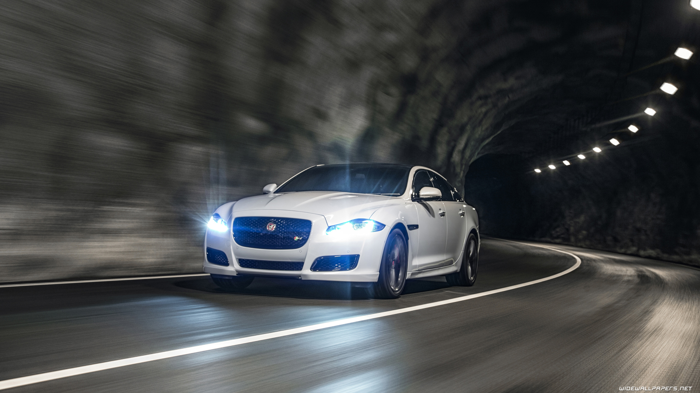
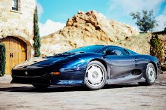
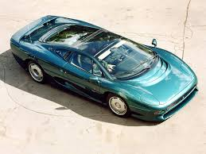
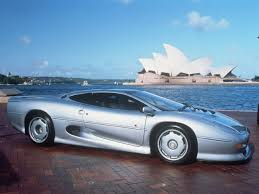
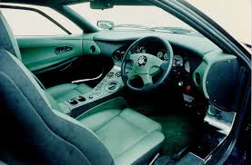
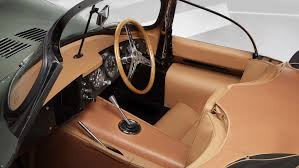
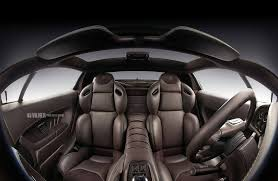

<!DOCTYPE html>
<html>
<head>
<link rel="stylesheet" type="text/css" href="nav.css">
<style type="text/css"> 
.zoomin img 
{
 height: 200px; width: 300px; 
 -webkit-transition: all 2s ease;
 -moz-transition: all 2s ease;
 -ms-transition: all 2s ease; 
 transition: all 2s ease; 
 } 
 .zoomin img:hover 
 { 
 height: 400px; width: 600px;
} 
</style>
</head>
<body background="bbbcxxmmm.jpg" >
<h2 id="top"></h2>
<div class="To">
<ul>
  <li><a href="home.html">Home</a></li>
  <li><a href="#contact">Cars Description</a></li>
  <li><a href="jquery-product-comparison\index.html">Cars Comparision</a></li>
  <li><a href="abtus.html">About the developers</a></li>
</ul>
</div>
<div class="vertical-menu">
  <a href="#">CARS</a>
  <a href="Audi A8l.html">Audi A8l</a>
  <a href="Bmw1.html">BMW I8</a>
  <a href="Bugatti Veyron.html">Bugatti Veyron</a>
  <a href="ferrari f50.html">Ferrari F50</a>
  <a href="laferrari.html">Ferrari Laferrari</a>
  <a href="ford mondeo.html">Ford Mondeo</a>
  <a href="ford mustang.html">Ford Mustang</a>
  <a href="jaguar xe.html">Jaguar XE</a>
  <a href="#"class="active">Jaguar XJ220</a>
  <a href="koenisegg agera r.html">Koenisegg Agera R</a>
  <a href="lambo veneno.html">Lamborghini Veneno</a>
  <a href="lamborghini aventador.html">Lamborghini Aventador</a>
  <a href="lamborghini gallardo.html">Lamborghini Gallardo</a>
  <a href="lamborghini huracan.html">Lamborghini Huracan</a>
  <a href="mercedes amgcla.html">Mecedes AMG CLA</a>
  <a href="pagani huyara.html">Pagani Huyara</a>
  <a href="porsche carrera gt.html">Porsche Carrera GT</a>
  <a href="Rolls royce.html">Rolls Royce</a>
  <a href="volkswagen golf.html">Volkswagen Golf</a>
  <a href="zenvo st1.html">Zenvo ST1</a>
</div>
<div class="d">
 <p style="color:red;font-size:32px;">Jump to Particular Sections</p>
 <a href="#i" style="color:White;">Introduction</a><br>
 <a href="#t" style="color:White;">Interiors</a><br>
<a href="#p" style="color:White;">Pricing</a><br>
<a href="#e" style="color:White;">Engine</a><br>
<a href="#s" style="color:White;">Specifications</a><br>
</div>
<div class="c">
<left><h1> Jaguar XJ220</h1>

<left><h3 style="color:black;"><a name="i" >Interiors</a></h3>
<left><h2> Introduction</h2>
<p1>
<pre>
The Jaguar XJ220 is a two-seater supercar produced 
by British luxury car manufacturer Jaguar 
from 1992 until 1994, 
in collaboration with the specialist
automotive and race engineering company
Tom Walkinshaw Racing.The XJ220 officially recorded 
a top speed of 212.3 mph (341.7 km/h) during 
testing by Jaguar.This made it the fastest 
production car from 1992 to 1993.
According to Jaguar an XJ220 prototype
managed a Nürburgring lap time of 7:46:36
in 1991 which was lower than any production 
car lap time back then.
The XJ220 was developed from a V12-engined
4-wheel drive concept car designed 
by an informal group of Jaguar employees working
in their spare time.The group wished to create 
a modern version of the successful Jaguar 24 Hours of Le Mans 
racing cars of the 1950s and '60s that could be entered 
into FIA Group B competitions.The XJ220 made use of engineering
work undertaken for Jaguar's then current racing car family
<left><h3>Differnt Views</h3>
<left><h4>Front View</h4>
<div class="zoomin">

</div>
<left><h4>Top View</h4>
<div class="zoomin">

</div>
<left><h4>Rear View</h4>
<div class="zoomin">

</div>
<left><h4>Side View</h4>
<div class="zoomin">

</div>
<left><h3 style="color:black;"><a name="t" >Interiors</a></h3>
<left><h3>Interiors</h3>
<div class="zoomin">

</div>
<br>
<div class="zoomin">

</div>
<br>
<div class="zoomin">

</div>
<left><h3 style="color:black;"><a name="p" >Interiors</a></h3>
<left><h3>Pricing</h3>
 The retail price of jaguar xj220 was £470,000
<left><h3 style="color:black;"><a name="e" >Interiors</a></h3> 
<left><h3>Engine</h3>
Jaguar and engine designer Walter Hassan
had previously created a 48-valve variant 
of their V12 engine specifically for motorsport use.
It featured a double overhead camshaft layout
with four valves per cylinder, compared with
the single overhead camshaft and
two valves per cylinder of the production
engine,which was used in the Jaguar XJ 
and Jaguar XJS models at the time.
TWR had manufactured a number
of these racing V12 engines during the 
1980s and they had been raced competitively,
with a 7-litre version of this engine featuring
in the Le Mans winning Silk Cut Jaguar XJR-9. 
Five of these engines still existed, all of which were
fitted with dry sump lubrication. 
These engines were chosen and considered to be especially
useful as the dry sump would lower the
vehicle's centre of gravity.
The displacement of the V12 was set at 6.2 litres (6222 cc)
for the XJ220.The engine fitted to the XJ220
concept had titanium connecting rod
<left><h3 style="color:black;"><a name="s" >Interiors</a></h3>
<left><h3>Specifications</h3>
<table bgcolor="red" width="70%" Border="1" cellpadding="5" cellspacing="5">
<caption></caption>
<tr>
<td>Manufacturer</td>
<td>Jaguar cars</td>
</tr>
<td>Production</td>
<td> 1992 to 1994</td>
</tr>
<tr>
<td>Predecessor	</td>
<td>Jaguar XJR-15</td>
</tr>
<tr>
<td>Assembly</td>
<td> JaguarSport Bloxham,Oxfordsh</td>
</tr>
<tr>
<td>Class</td>
<td>sports car(s)</td>
</tr>
<tr>
<td>Designer</td>
<td>Jim Randle,Keith Helfet</td>
</tr>
<tr>
<td>length</td>
<td>4,930 mm (194.1 in)</td>
</tr>
</table>
</pre>
</p1>
<font size="100px"><a href="#top" style="color:Yellow;"><p style="text-align:center">Back to top</a></font>
</div>
</body>
</html>